электронный ресурс по учебной дисциплине 1-58 01 01 - "Инженерно-психологическое обеспечение информационных технологий"
|
||
| Оглавление | Программа | Теория | Практика | Контроль знаний | Об авторах | ||
| Практика
ЛАБОРАТОРНАЯ РАБОТА № 4 Инвертирующие и неинвертирующие усилители 4.1. Цель работы Исследовать работу инвертирующего и неинвертирующего операционного усилителей (ОУ).
4.2. Теоретические сведения
4.2.1. Введение
На рис. 4.1 показана схема на ОУ, получившая наиболее широкое применение. Это усилитель с отрицательной обратной связью, у которого коэффициент усиления задаётся резисторами Roс и Rвх. Он способен усиливать сигналы как переменного, так и постоянного тока.
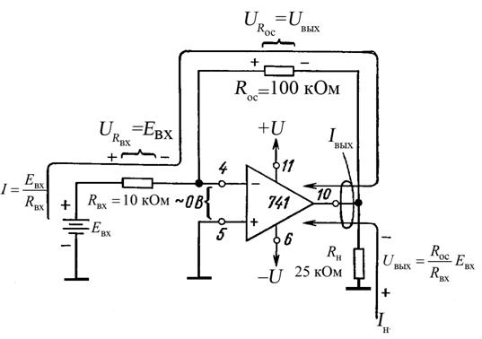
Рис. 4.1. Инвертирующий усилитель при положительном напряжении на входе (+). Номера выводов ОУ 741 в корпусе DIP
проставлены рядом с маленькими кружочками. 4.2.2. Подача на инверсный вход положительного напряжения На рис.4.1 к инверсному входу ОУ через входной резистор Rвх приложено положительное напряжение Eвх. Отрицательная обратная связь осуществляется резистором обратной связи Rос. Поскольку ОУ работает в ненасыщенном режиме, напряжение между входами (+) и (–) практически равно 0В и поэтому неинверсный вход также находится под нулевым потенциалом, т. е. потенциалом земли. Вот почему говорят, что вход (–) виртуально заземлён. Так как на одном из конце резистора Rвх имеется потенциал Eвх, а на другом –0В, то падение напряжения на Rвх равно Eвх. Ток I через резистор находят по закону Ома: 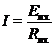. (4.1,а) В сопротивление Rвх входит и сопротивление генератора сигналов. Весь входной ток I протекает по Rос, поскольку вход (–) ОУ потребляет ток пренебрежимо малой величины. Заметим, что ток в Rос определяется Rвх и Eвх, а не значениями Rос или параметрами операционного усилителя. Падение напряжения на Rос равно просто IRос или 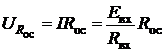. (4.1,б) Из рис. 4.1 видно, что один конец Rос соединён с нагрузкой Rн. Напряжение относительно земли в точке этого соединения равно Uвых. Вторые концы Rос и Rн находятся под потенциалом земли. Следовательно, Uвых равно URос (напряжению на Rос). Для определения полярности Uвых, заметим прежде всего, что левый по схеме конец Rос имеет потенциал земли. Направление тока, задаваемое Евх. таково, что правый конец Rос находится под отрицательным потенциалом. Отсюда следует, что при положительном напряжении Евх напряжение Uвых – отрицательное. Теперь, приравняв Uвых к Uос и добавив знак минус, отражающий тот факт, что Uвых имеет полярность, противоположную полярности Eвх, имеем Коэффициент усиления ОУ с обратной связью можно получить из (4.2а) в следующем виде: (4.2б) Знак минус в (4.2б) указывает, что полярность выходного сигнала Uвых обратна (инверсна) полярности Eвх. По этой причине схема ОУ на рис. 4.1 называется инвертирующим усилителем. 4.2.3. Ток нагрузки и выходной ток
Ток нагрузки Iн, который протекает по Rн, определяется только Rн и Uвых, но отдаёт его в нагрузку выходная цепь ОУ. Таким образом, . Ток в Roс также поступает из выходной цепи операционного усилителя. Выходной ток ОУ, следовательно, равен: (4. 3) Максимальное значение Iвых определяется типом ОУ; обычно оно лежит между 5 и 10 мА. Пример 4.1. Пусть на рис 4.1 Rос=100 кОм. Rвх=10 кОм и Eвх = 1 В. Определить: а) I, б) Uвых, в) Кос. Решение: а) из (4.1,а): 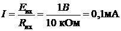; б) из (4. 2,а) ; в) используя (4.2,б), получаем . Последний результат можно проверить, взяв отношения Uвых и Eвх : . Пример 4.2. Используя данные предыдущего примера, а также приняв Rн = 25кОм, определите: а) Iн и б) суммарный ток, поступающий на выход ОУ. Решение: а) используя значение Uвых, вычисленное в (4.1), получаем: 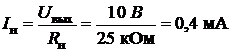, направление этого тока показано на рис. 4.1. б) используя (4.3) и значение I из предыдущего примера имеем
Входное сопротивление схемы (см. рис. 4.1) для генератора Eвх равно Rвх. Одним из оснований для использования ОУ в данной схеме является его высокое входное сопротивление. Чтобы сохранить высокое входное сопротивление всей схемы, собранной на ОУ, следует выбирать резистор с сопротивлением не менее 10 кОм. 4.2.4. Подача на инверсный вход отрицательного напряжения На рис. 4.2 на инверсный вход ОУ через резистор Rвх подано напряжение отрицательной полярности Евх. Принципы анализа и расчета, приведённые в подразд. 4.1.3, справедливы и в данном случае. Единственное, чем различаются рис. 4.1 и 4.2, – это направление токов. Изменяя полярность Евх, мы изменяем направление всех токов и полярность всех напряжений на противоположные. Теперь при отрицательном Евх напряжение на выходе усилителя будет положительным. 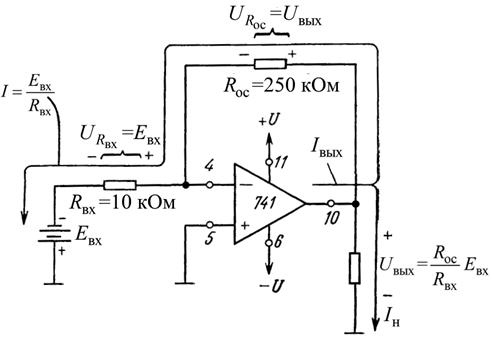 Рис. 4.2. Инвертирующий усилитель при отрицательном напряжении на входе (–).
Пример 4.3. Пусть в схеме на рис. 4.2 Rос = 250 кОм, Rвх =10 кОм и Eвх= –0,5В. Определить: а) I; б) напряжение на Rос, в) Uвых. Решение. а) из (4.1,а) имеем 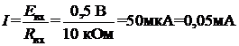. б) из (4.1,б) имеем: ; в) из (4.2,а) имеем 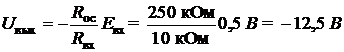. Таким образом, напряжение на выходе схемы равно падению напряжения на Rос и Кос = –25. Пример 4.4. Используя данные предыдущего примера, определить: а) Rн при котором ток нагрузки равен 2мА; б) Iвых, в) выходное сопротивление схемы. Решение: а) используя закон Ома и (4.3), получим . б) из (4.3) и полученных в (4.3) значений следует, что
в) входное сопротивление схемы (для Eвх) равно сопротивлению входного резистора Rвх, т.е. 10 кОм. 4.2.5. Подача на инверсный вход переменного напряжения На рис. 4.3 на инверсный вход ОУ подано переменное напряжение Eвх. Для положительной полуволны сигнала полярность напряжений в данной схеме и направления токов совпадают с показанными на рис. 4.1, а для отрицательной — с теми, что показаны на рис. 4.2. Как показано на рис. 4.3, выходной сигнал имеет противоположный входному знак (находится с последним в противофазе) т. е. когда Евх положительное, Uвых – отрицательное, и наоборот. Выведенные в 4.2.2 выражения справедливы и для схемы на рис. 4.3. Пример 4.5. Вычислить коэффициент усиления Кос (см. рис. 4.3) для Rос = 500 кОм и Rвх = 50 кОм 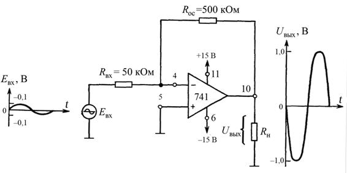
Рис. 4.3. Инвертирующий усилитель при входном сигнале переменного тока
Решение. Из (4. 26) следует . Пример 4.6. Определить амплитуду выходного напряжения в схеме, если пиковое значение входного напряжения составляет 0,1В. Решение. Используя (4.2,а), получаем .
4.2.6. Инвертирующий сумматор
В схеме (рис. 4.4) Uвых равно сумме входных напряжений, взятых с обратным знаком. Формально это записывается так: (4.4) Принцип работы схемы основан на том факте, что суммирующая точка ∑ и инверсный вход имеют потенциал земли. Ток I1 задают E1 и R, I2 задают Е2 и R, I3 –Е3 и R, т. е. , Так как инверсный вход ответвляет пренебрежимо малый ток, I1, I2 и I3 полностью протекают по Rос, т.е. входные токи текут через Roс и создают на нем падение напряжения, равное Uвых: 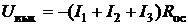.
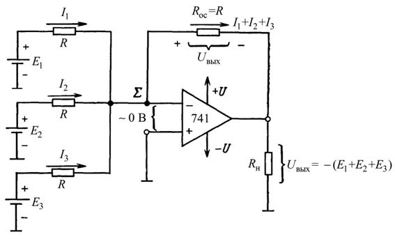
Рис. 4.4. Инвертирующий сумматор (R = 10 кОм)
Подставив вместо токов их выражения из (4.5) и взяв Ro.с = R, получаем: 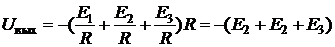. (4.4): Пример 4.7. На рис. 4.4 E1 = 2В, E2 = 3В, E3 = 1В, а все резисторы имеют сопротивление по 10 кОм. Вычислять Uвых. Решение. Из (4. 4) имеем . Пример 4.8. Найти Uвых при смене полярности E3, (см. рис. 4.4). Все остальные условия совпадают с приведенными в примере 4.7.
Решение. Из (4.4) имеем . Если требуется просуммировать только два входных сигнала E1 и Е2, то вход E3 просто закорачивают на землю. Если нужно сложить четыре сигнала, достаточно добавить ещё один резистор R, включив его между четвертым источником сигнала и суммирующей точкой ∑. При любом другом числе входных напряжений соответственно надо изменить уравнение (4.4).
4.2.7. Смеситель сигналов звуковых частот
В сумматоре на схеме (см. рис. 4.4) все входные токи протекают по резистору обратной связи Rос. Ток I1 не влияет на величину I2 или I3. Вообще говоря, входные токи не влияют друг на друга, поскольку для каждого из них потенциал суммирующей точки равен потенциалу земли. Следовательно, входные токи, а значит, и входные напряжения Е1,E2,и Е3 не взаимодействуют друг с другом. Это свойство исключительно полезно для смешивания сигналов низкой частоты (НЧ). Пусть в схеме рис.4.4 вместо генераторов E1, E2 и Е3 включены микрофоны. Переменные напряжения от каждого из них в любой момент времени будут суммироваться или смешиваться. Следовательно, если один из микрофонов передаёт звук (направлен в сторону) гитары, то сигнал с этого микрофона не пройдёт на микрофон, обращённый к певцу. Если между каждым микрофоном с соответствующим входным резистором поместить регулятор громкости в 100 кОм, то относительные уровни сигналов с каждого из этих регуляторов можно изменять до их последующего суммирования. При этом можно, например, сделать так, что слабый голос певца будет звучать громче гитары.
4.2.8. Инвертирующий сумматор с усилением
Трехвходовый усиливающий инвертирующий сумматор, показанный на рис. 4.5, аналогичен инвертирующему усилителю за исключением того, что каждое входное напряжение в нем может быть умножено на постоянный коэффициент, равный коэффициенту усиления по данному входу, а результаты суммируются. Так же, как и в простом сумматоре, каждый входной ток в данной схеме задаётся соответствующим входным напряжением и сопротивлением: . (4.6)
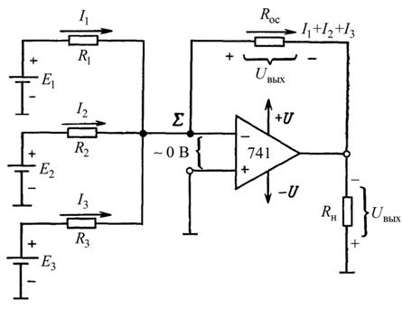
Рис. 4.5. Инвертирующий сумматор с усилением (Rос > R1, R2 и/или R3).
Входные токи здесь, как и в схеме простого сумматора, полностью суммируются в Rос, создавая на выходе напряжение, равное произведению Rос на сумму токов, т.е. : 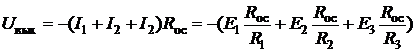. (4.7) Выражение (4.7) показывает, что можно регулировать усиление по каждому входу, выбирая нужное отношение Rос к каждому соответствующему входному сопротивлению. Пример 4.9. Пусть на рис. 4.5 Rос = 100 кОм. R1 = 10 кОм, R2 = 20 кОм к R3 = 50 кОм. Определить: а) абсолютное значение коэффициента усиления для напряжения, подаваемого на каждый из трёх входов, и б) напряжение на выходе при E1= E2 =0,1В, E3= –0,1В. Решение. а) из уравнения (4.7) можно определить коэффициент усиления усилителя с обратной связью Кос по каждому входу. Для E1 имеем: 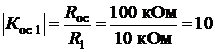; для E2: 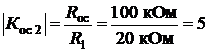; для E3: 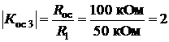; б) Из уравнения (4.7) имеем 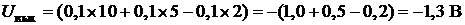. Усредняющий усилитель даст на выходе напряжение, пропорциональное среднему значению всех входных напряжений. При наличии трёх входов усреднитель должен просуммировать все три входных напряжения и разделить результат на три. Схема усреднения имеет ту же схемную конфигурацию, что и инвертирующий сумматор (см. рис.4.4) или инвертирующий сумматор с усилением, показанный (см. рис.4.5). Отличие данной схемы состоит в том, что сопротивления всех входных резисторов делают равными некоторому удобному значению R1, а сопротивление резистора обратной связи – равными Rос, делённому на число входов. Пусть число входов равно n. Тогда для трёхвходовой схемы усреднения n = 3 и Rос=R/3. Подстановка в (4.7) R/3 вместо Rос и R вместо R1, R2 и R3 показывает, что . (4.8) Пример 4.10. На рис. 4.5 R1=R2=R3=R=100 кОм, Rос=100кОм/3=33кОм. Найти Uвых, если E1=E2= 5В и E3= –1В. Решение. Так как Rос =R/3, усилитель является схемой усреднения и из (4.8) при n=3 имеем 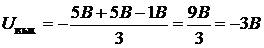.
4.2.9. Повторитель напряжения
Схема на рис. 4.6 называется повторителем напряжения; встречаются также и другие названия данной схемы: усилитель с единичным коэффициентом усиления (или просто с единичным усилением), буферный усилитель или изолирующий усилитель. Входное напряжение Eвх в схеме повторителя подаётся непосредственно на вход (+) ОУ. Так как напряжение между входами (+) и (–) операционного усилителя, (см. рис.4.6), можно рассматривать как равное нулю, то 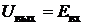. (4.9,а) Заметим, что выходное и входное напряжения совпадают как по величине, так и по знаку. Следовательно, как на то указывает название схемы, выходное напряжение повторяет напряжение на входе или напряжение источника. Коэффициент усиления по напряжению равен 1 (единичное усиление), что видно из выражения: . (4.9,б) Полное входное сопротивление схемы со стороны входа (+) очень велико, порядка нескольких МОм. Поэтому напряжение на выходе изолировано или отделено от входного напряжения.
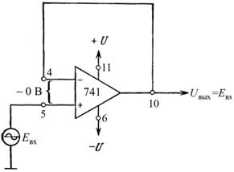 Рис. 4.6. Повторитель напряжения
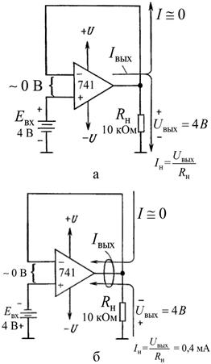
Рис 4.7. Схемы к примеру 4.11. Повторители напряжения: а ‑ при положительном, б ‑ отрицательном напряжениях на входе Пример 4.11. Для рис. 4.7,а определить: а) Uвых, б) Iн, в) Iвых Решение. а) Из (4.9,а) имеем: ; б) по закону Ома 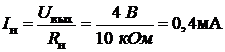; в) в соответствии с (4.3) имеем Iвых = I+Iн. Однако I ≈ 0, поскольку входные цепи ОУ потребляют пренебрежимо малый ток: следовательно , Iвых = 0+0,4мА = 0,4мА. При изменении полярности Eвх полярность Uвых и направления токов изменяются на противоположные, как показано на рис. 4.7,б.
4.2.10. Неинвертирующий усилитель
На рис. 4.8,а и рис. 4.8,б показаны неинвертирующие усилители; это означает, что выходное напряжение Uвых имеет ту же полярность, что и входное напряжение Eвх. У инвертирующего усилителя входное сопротивление равно Rвх (см. подразд. 4.1); входное же сопротивление неинвертирующего усилителя есть входное сопротивление ОУ, которое имеет исключительно большую величину, обычно не меньше 100 МОм. Так как напряжение между инверсным и неинверсным входами ОУ практически равно нулю, оба этих входа находятся под одним и тем же потенциалом Eвх. Отсюда следует, что Eвх падает на R1 и вызывает в нем ток I, равный . (3.10а) Направление этого тока зависит от полярности Eвх. Сравним рис. 4.8,а и рис. 4.8,б. Ток через входа (–) ОУ пренебрежимо мал, поэтому I течёт пo Roс и падение напряжения на нем можно выразить в следующем виде: 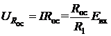. (4.10б) Выходное напряжение Uвых равно сумме напряжений на R1 (т. e. Eвх) и на Roс (т. е. URос): 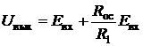, или 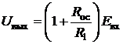. (4. 11а) Чтобы получить выражение для коэффициента усиления по напряжению, преобразуем (4.11,а); при этом получим . (4. 11,б) Из последнего уравнения видно, что коэффициент усиления по напряжению неинвертирующего усилителя равен абсолютной величине коэффициента усиления инвертирующего усилителя (Roс/R1) плюс 1.
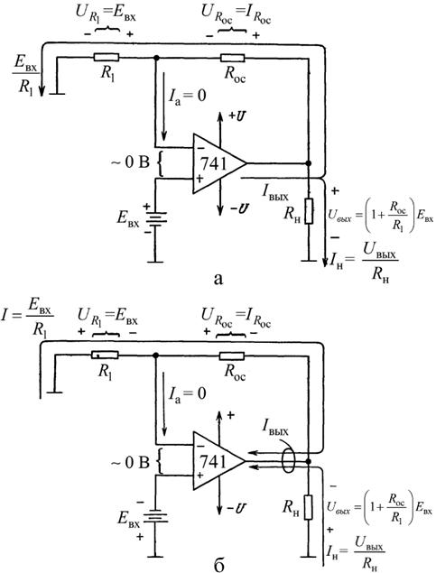
Рис. 4.8. Полярности напряжений и направления токов в неинвертирующем усилителе для положительного (а) и отрицательного (б) входных напряжений Ток нагрузки Iн равен Uвых/Rн и, следовательно, зависит только от Uвых и Rн. Ток Iвых, вытекающий из выхода ОУ (или втекающий в него), определяется выражением (4.3). Пример 4.12. Положим в схеме (см. рис. 4.8,а) R1=5кОм, Rос =20 кОм, и Eвх= 2 В. Определить: а) Uвых и б) Кос. Решение. а) из (4.11) . Используя (4.11,б), получаем , или . Пример 4.13. Используя данные и результаты из примера 4.12, а также то, что Rн=5 кОм, вычислить: а) ток нагрузки Iн и б) выходной ток ОУ Iвых. Решение. а) так как Uвых = 10В (из примера 4.12), то 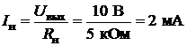; б) используя (4.3) и значение I = 2В/5кОм = 0,4 мА, получим . Пример 4.14. Рассчитать значение сопротивления Rос в схеме на рис. 4.8,б так, чтобы Кос =16 при R1= 2кОм. Решение. Из уравнения (4.11,б) получим , откуда .
4.2.11. Неинвертирующий сумматор с двумя входами
Такой сумматор
показан на
рис. 4.9,а.
Все резисторы в этой схеме имеют равные сопротивления. Чтобы определить
напряжение Eвх приложенное к
входу (+), обратимся к рис. 4.9,б. Разность между Е1 и
E2 распределяется поровну между входными резисторами R, так
что 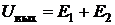. (4.12)
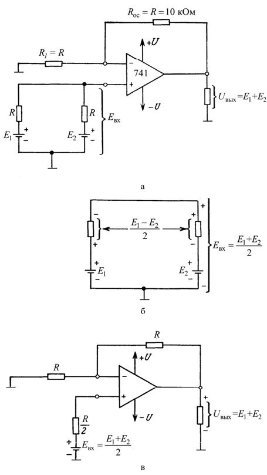
Рис 4.9 Неинвертирующий сумматор с двумя входами. а – схема включения; б – схема для вычисления Eвх при E1>E2; в – эквивалентная схема для а 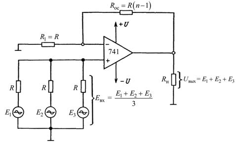
Рис. 4.10. Неинвертирующий сумматор с тремя входами (R=10 кОм)
4.2.12. Неинвертирующий сумматор с N входами
Если необходимо просуммировать более двух входных сигналов, все резисторы, за исключением Rос, делают одинаковыми. При этом в сумматоре с n входами сопротивление Rос выбирают по формуле . (4.13) Eвх теперь равно сумме входных напряжений, делённой на число входов (т. е. среднему значению входных напряжений). При этом Uвых равно просто сумме входных напряжений. На рис. 4.10 показана схема неинвертирующего сумматора с тремя входами.
4.3. Приборы и оборудование Программа компьютерного моделирование электронных схем Multisim: 4.4. Порядок выполнения лабораторной работы 4.4.1. Инвертирующий усилитель 1. Соберите инвертирующий усилитель, показанный на схеме 4.11 используя R1 = 10 kΩ, Rос = 24 kΩ. Выходной сигнал генератора является входным для усилителя (Uвх). 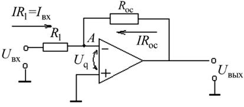
Рис. 4.11. Схема инвертирующего усилителя
2. Изменяя входной сигнал, как показано в таб. 4.1, 4.2 пронаблюдайте выходной сигнал и заполните таблицу, каждый раз сверяя теоретическое и реальное значения. 3. Зафиксируйте картинки временных диаграммы входных и выходных сигналов для Uвх = min и Uвх = max для синусоидальной, треугольной и прямоугольной форм входных сигналов. 4. Повторите п. 1, 2 и 3 для инвертирующего усилителя с R1=10 kΩ и Rос=100 kΩ.
Таблица 4.1,а Значения выходного сигнала инвертирующего усилителя (R1=10 kΩ, Rос=24 kΩ)
Таблица 4.2 Значения выходного сигнала инвертирующего усилителя (R1=10 kΩ, Rос=100 kΩ)
5. Объясните результаты экспериментов и сделайте выводы.
4.4.2. Неинвертирующий усилитель.
1. Соберите неинвертирующий усилитель, показанный на схеме рис. 4.12, используя R1=10 kΩ, Rос=24 kΩ, R2=10 kΩ, R3=24 kΩ. Выходной сигнал генератора является входным для усилителя (Uвх). 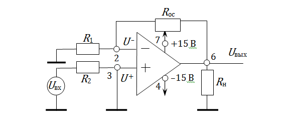
Рис. 4.12. Схема неинвертирующего усилителя с входным делителем
2. Изменяя входной сигнал, как показано в таб. 4.3, пронаблюдайте выходной сигнал и заполните таблицу, каждый раз сравнивая теоретическое и практическое значения. 3. Нарисуйте временные диаграммы входного и выходного сигналов для Uвх = min и Uвх = max для синусоидальной, треугольной и прямоугольной форм входных сигналов. Таблица 4.3 Значения выходного сигнала неинвертирующего усилителя (R1=10 kΩ, Rос=24 kΩ, R2=10 kΩ, R3=24 kΩ)
4. Повторите п. 1, 2 и 3 для неинвертирующего усилителя R1=10 kΩ, Rос=100 kΩ, R2=10 kΩ, R3=100 kΩ. Таблица 4.4
Значения выходного сигнала неинвертирующего усилителя: (R1=10 kΩ, Rос=100 kΩ, R2=10 kΩ, R3=100 kΩ)
5. Объясните результаты экспериментов и сделайте выводы. 4.5. Содержание отчёта 1. Цель лабораторной работы. 2. Схемы устройств, исследованных в работе. 3. Результаты исследований. 4. Выводы. 5. Ответы на контрольные вопросы. 4.6. Контрольные вопросы 1. Разработайте инвертирующий усилитель с коэффициентом усиления 5 и R1 = 10 kΩ; 2. Разработайте неинвертирующий усилитель с коэффициентом усиления 5 и R1 = 10 kΩ; 3. Разработайте неинвертирующий усилитель с коэффициентом усиления 5 и R1 = R2 = 10 kΩ.
|
| (С) БГУИР |